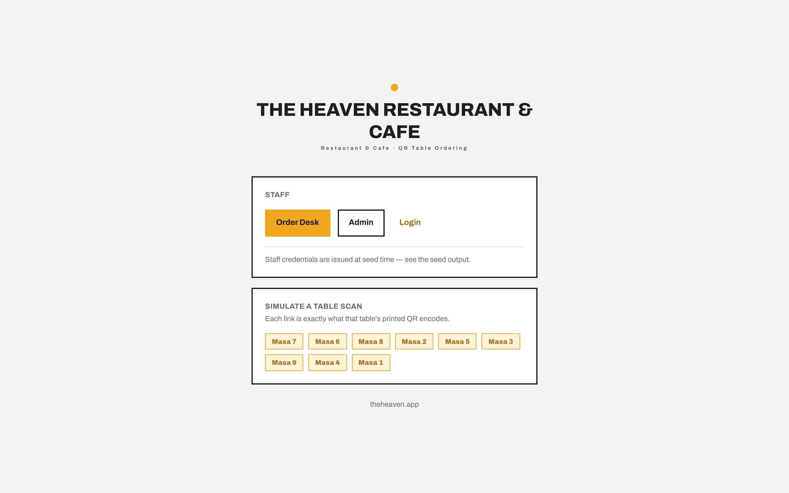
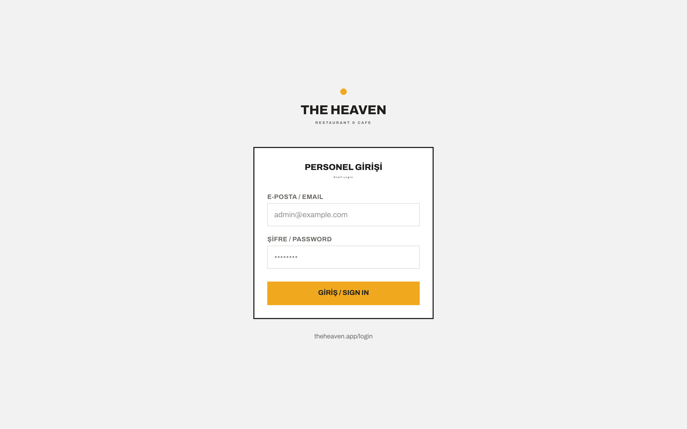
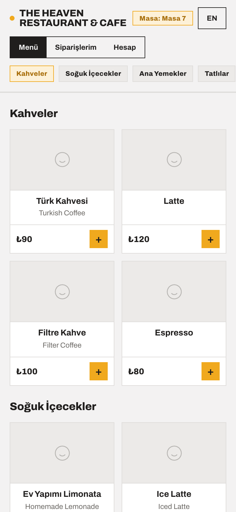
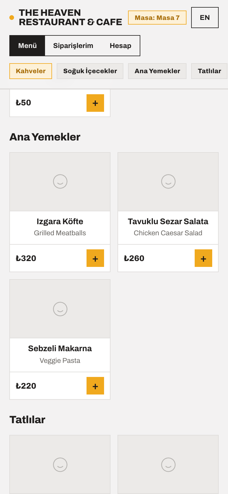
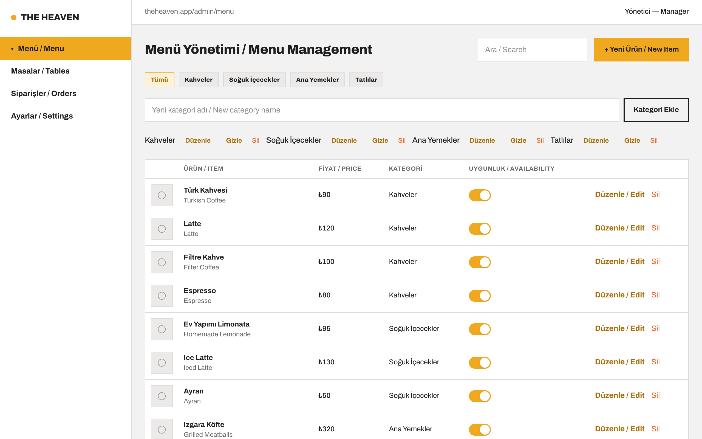
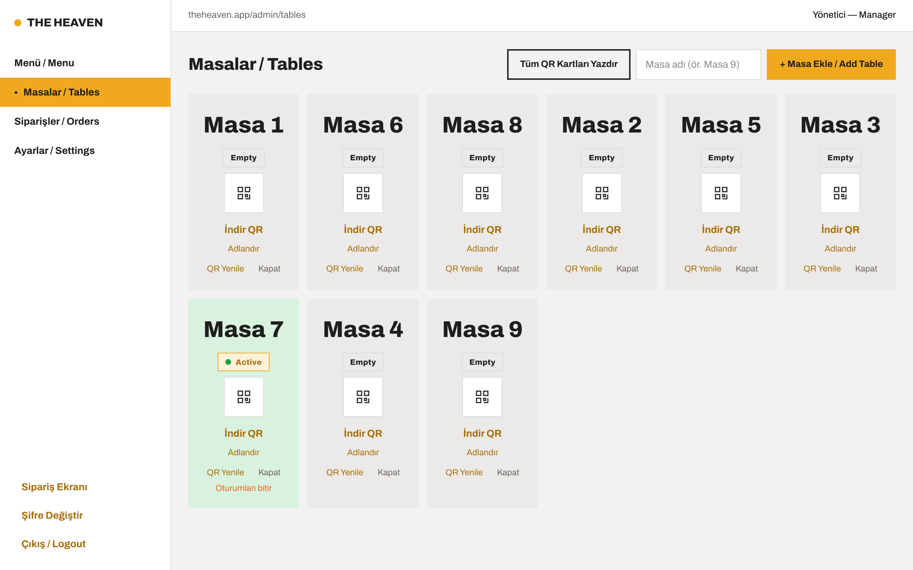
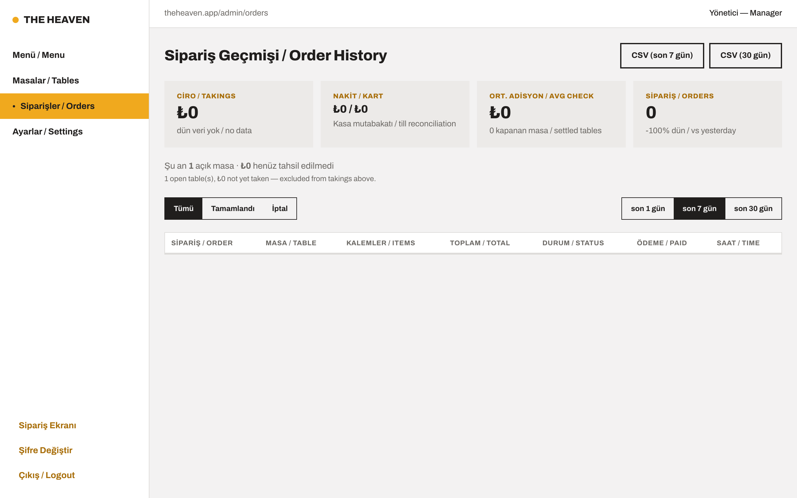
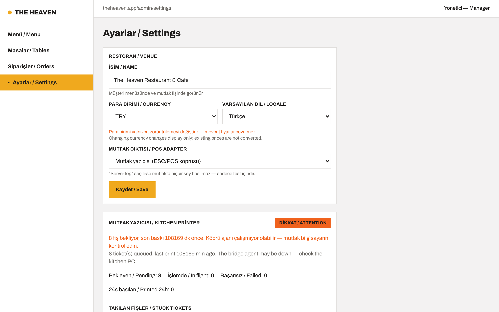
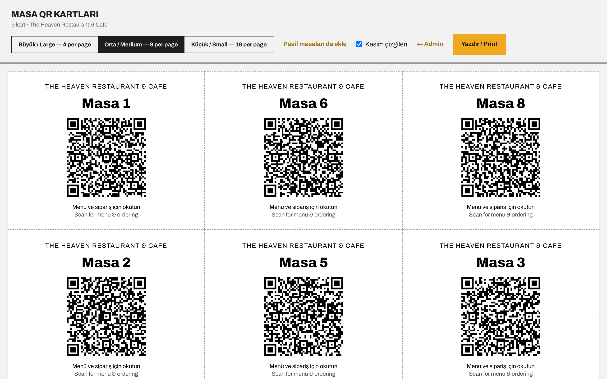
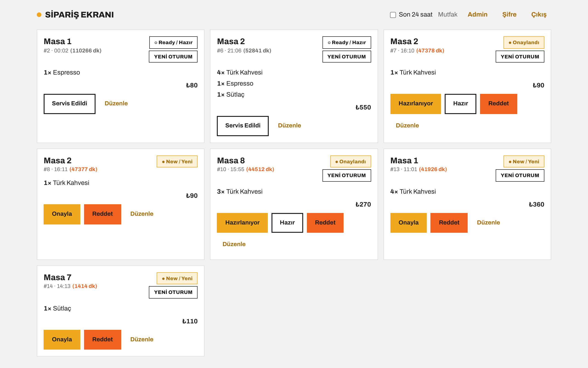

Separate the Heaven brand from the product
Goal: the app becomes the product Masadan Sipariş, and Heaven becomes its first customer. Heaven keeps exactly the look it has today. That look moves out of the shared code into a brand pack, which an install selects. The next venue gets its own pack and needs no component changes.
BRAND=heaven
must look identical. With BRAND=default, every screen must render complete and neutral, with no trace of Heaven.
plan.md is still checking QR ordering on a real phone, and this work doesn't help with it.
This change touches about 20 component files. Do it in the first quiet week after launch.
1. Where Heaven lives today
The data model is already separated per venue: every table has a venueId, staff tokens carry it, and
QR codes and bridge keys resolve to it. Heaven appears in two kinds of places:
from DB values that already come from the Venue row and need nothing,
and hardcoded values that have to move into the brand pack.
| What | Where | Kind |
|---|---|---|
| Color variables (bg, text, neutrals, accent, orange) | src/app/globals.css:3-21 | hardcoded |
| Archivo font for headings and body | src/app/layout.tsx, globals.css:17,26,31 | hardcoded |
| "THE HEAVEN" wordmark | src/app/login/LoginForm.tsx:44, src/components/AdminApp.tsx:47 | hardcoded |
| "Restaurant & Cafe" tagline | src/app/page.tsx:41, src/app/login/LoginForm.tsx:45 | hardcoded |
theheaven.app/… address labels | AdminApp.tsx:29-32, page.tsx:90, LoginForm.tsx:95 | hardcoded |
| Browser tab title "The Heaven — Masadan Sipariş" | src/app/layout.tsx:12 | hardcoded |
| Tab icon (dark square, amber dot) | src/app/icon.svg | hardcoded |
Seed defaults (admin@theheaven.local, venue name, slug) | prisma/seed.mjs:29-37 | hardcoded |
| Test fixtures named "The Heaven" | tests/ticket.test.ts, tests/menuCache.test.ts | hardcoded |
| Full venue name on home page, customer menu header, QR cards, kitchen ticket | Venue.name | from DB |
| Currency, default language, POS adapter | Venue row, editable in Settings | from DB |
The orange problem
--color-heaven-orange (#f0621d) is used about 45 times,
but almost never as branding. In the screenshots it's the Reddet (reject) button, the Sil (delete) links, the
Danger Zone, the printer DİKKAT / ATTENTION badge and every error message. It means
danger. If it moved into Heaven's pack unchanged, a venue with a green brand would get green error messages.
So it is split first (step 2 below).
--color-accent (#f0a91e) is the real brand color:
primary buttons, the active sidebar item, the wordmark dot, the + buttons on the menu and the toggles.
2. Before: the reference screenshots
Public and staff entry


theheaven.app hardcoded

theheaven.app/login all hardcodedCustomer (phone)




Admin










Order desk


3. Target structure
src/brands/
heaven/
theme.css ← today's :root color block, copied unchanged
brand.ts ← { wordmark: "THE HEAVEN", tagline: "Restaurant & Cafe",
headingFont: "archivo", title: "The Heaven — Masadan Sipariş" }
icon.svg ← today's icon
default/
theme.css ← neutral Masadan Sipariş colors
brand.ts ← { wordmark: venue name, tagline: "QR Table Ordering", … }
icon.svg
index.ts ← getBrand(): reads BRAND, falls back to "default"
src/app/globals.css ← component styles only (.btn, .card, .tag, .wordmark …),
plus fixed tokens like --color-dangerWhat stays shared: component styles. The buttons, cards, tags, the wordmark styling and layout are the product's design. They only use variables, so they need no change. The brand pack holds values, never components.
Choosing a brand per install: each install's .env sets BRAND=heaven.
This fits the one-install-per-venue hosting. If venues ever share one server, it becomes a Venue.brand column, and the brand packs stay as they are.
4. Steps
- Lock the reference. Commit the screenshots in this document and add the capture script (appendix) as
scripts/brand-screens.mjs, so "after" is captured exactly the way "before" was. - Split the orange into two variables. Replace
--color-heaven-orangewith--color-dangerfor errors, rejects, deletes, warnings and late counters (about 40 uses), and--color-brand-strongfor the few real brand uses. Heaven's pack sets both to#f0621d, so nothing changes on screen.--color-dangergets a fixed default inglobals.css, so a brand that doesn't set it still gets red-orange errors. - Move the color block from
globals.cssintosrc/brands/heaven/theme.css, unchanged. - Load every brand in one build. Scope each pack under
html[data-brand="heaven"] { … }and have the root layout setdata-brandon each request fromgetBrand(). One release package then serves every venue. - Replace the hardcoded text with
brand.wordmark,brand.taglineandgenerateMetadata()for the title. Build the address labels frombaseUrl()instead oftheheaven.app. - Font and icon.
next/fontcan't switch fonts at runtime, so the layout loads the fonts used by any pack and the brand only picks which one--font-headingpoints to. The tab icon is served from the selected pack. - Make the seed script and tests neutral. Seed defaults become "Demo Venue" and
admin@example.local. Heaven's real values move to its install'sSEED_VENUE_*/SEED_*_EMAILsettings. Test fixtures use "Demo Venue". - Compare. Capture with
BRAND=heavenintodocs/screenshots/heaven-after/and compare pixel by pixel withheaven-before/. Then capture withBRAND=defaultand review by eye.
5. Acceptance checklist
- All 10
heaven-afterscreenshots matchheaven-before, apart from data that changes over time (minute counters). - No file outside
src/brands/heaven/contains the word "heaven" (case-insensitive). Check withgrep. BRAND=default: every screen renders with a neutral wordmark, colors, title and icon.- An unset or unknown
BRANDfalls back todefaultand logs a warning at boot. It must not crash, and it must not fall back to Heaven. - Lint, typecheck, the 313+ Vitest tests and the production build stay green.
- The kitchen ticket still prints the venue name with Turkish characters intact (it comes from the DB, so it should be unaffected).
6. Adding a new venue afterwards
- Copy
src/brands/default/tosrc/brands/<venue>/, then set their colors, font, wordmark and icon. - For their install, set
BRAND=<venue>,SEED_VENUE_NAME,SEED_VENUE_SLUGand the staff emails, then run the seed. - Set their final address in
NEXT_PUBLIC_BASE_URLbefore printing QR cards. The cards are signed against it.
If step 1 ever requires editing a component, the separation has a gap. Fix it in the shared code, not in the brand.
7. Out of scope
- Several venues on one shared server. This would need venue lookup by hostname instead of
db.venue.findFirst()(src/app/page.tsx:23), staff emails unique per venue instead of globally, each venue's address stored in the DB, and a super-admin screen for adding venues. Revisit this at around five venues. Until then, each venue gets its own install. - Brand settings in the admin panel (color picker, logo upload). Brand packs in code are enough while you set up each venue yourself.
Appendix: how the screenshots were captured
The Claude in Chrome extension couldn't capture this page (its screenshots timed out), so the screens were captured with
playwright-core driving the already-installed Playwright Chromium. It logs in with the seed accounts
through /api/auth/login and opens a table through the dev-only "simulate a table scan" link. It only reads, except that
opening the menu starts one table session (on Masa 7). It places no orders.
node --env-file=.env.local scripts/brand-screens.mjs docs/screenshots/heaven-afterScript source
// Captures the current (Heaven-branded) screens for PLAN.html.
// Usage: node --env-file=<repo>/.env.local shoot.mjs <outDir>
import { chromium } from "playwright-core";
const OUT = process.argv[2];
const BASE = "http://localhost:3000";
const EXE = `${process.env.HOME}/Library/Caches/ms-playwright/chromium-1243/chrome-mac-arm64/Google Chrome for Testing.app/Contents/MacOS/Google Chrome for Testing`;
const ADMIN = { email: process.env.SEED_ADMIN_EMAIL ?? "admin@theheaven.local", password: process.env.SEED_ADMIN_PASSWORD };
const DESK = { email: process.env.SEED_DESK_EMAIL ?? "desk@theheaven.local", password: process.env.SEED_DESK_PASSWORD };
const browser = await chromium.launch({ executablePath: EXE });
const desktop = { viewport: { width: 1280, height: 800 }, deviceScaleFactor: 2 };
const phone = { viewport: { width: 390, height: 844 }, deviceScaleFactor: 2, isMobile: true, hasTouch: true };
async function shot(page, name) {
await page.waitForLoadState("networkidle").catch(() => {});
await page.waitForTimeout(2000);
await page.addStyleTag({ content: "nextjs-portal{display:none!important}" });
await page.screenshot({ path: `${OUT}/${name}.png` });
console.log("saved", name);
}
async function login(ctx, who) {
const res = await ctx.request.post(`${BASE}/api/auth/login`, { data: who });
if (!res.ok()) throw new Error(`login ${who.email} -> ${res.status()}`);
}
// Public screens
{
const ctx = await browser.newContext(desktop);
const page = await ctx.newPage();
await page.goto(BASE);
await shot(page, "01-home");
// Dev-only table links on the home page lead to a table's menu.
var tableHref = await page.locator('a[href*="/scan/"], a[href*="/t/"]').first().getAttribute("href");
await page.goto(`${BASE}/login`);
await shot(page, "02-login");
await ctx.close();
}
// Customer, phone-sized
{
const ctx = await browser.newContext(phone);
const page = await ctx.newPage();
// Follow the link on its own origin: the scan route sets the session cookie there.
await page.goto(new URL(tableHref, BASE).href);
await shot(page, "10-customer-menu");
await page.mouse.wheel(0, 900);
await shot(page, "11-customer-menu-scrolled");
await ctx.close();
}
// Admin
{
const ctx = await browser.newContext(desktop);
await login(ctx, ADMIN);
const page = await ctx.newPage();
await page.goto(`${BASE}/admin`);
await shot(page, "20-admin-menu");
for (const [label, name] of [["Masalar / Tables", "21-admin-tables"], ["Siparişler / Orders", "22-admin-orders"], ["Ayarlar / Settings", "23-admin-settings"]]) {
await page.getByRole("button", { name: label }).click();
await shot(page, name);
}
await page.goto(`${BASE}/admin/qr-sheet`);
await shot(page, "24-qr-sheet");
await ctx.close();
}
// Desk
{
const ctx = await browser.newContext(desktop);
await login(ctx, DESK);
const page = await ctx.newPage();
await page.goto(`${BASE}/desk`);
await shot(page, "30-desk");
await ctx.close();
}
await browser.close();